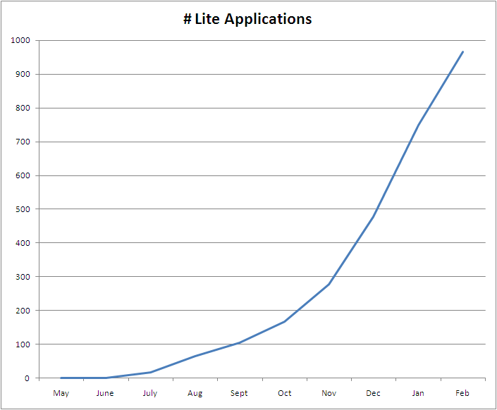
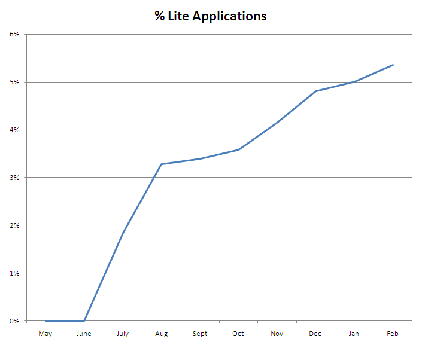
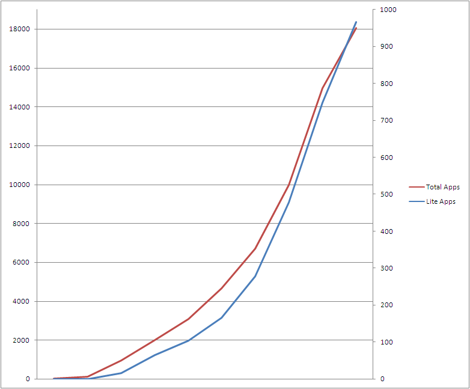
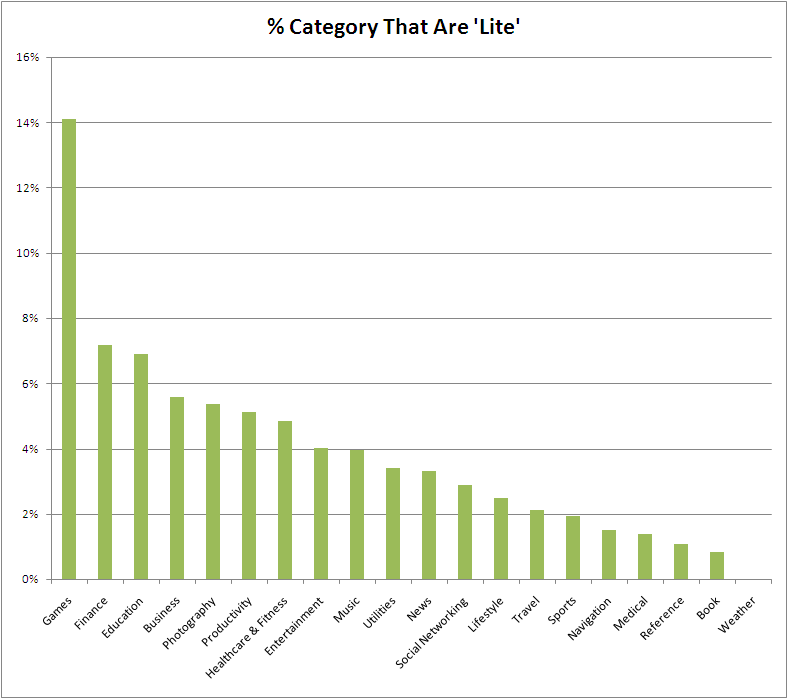
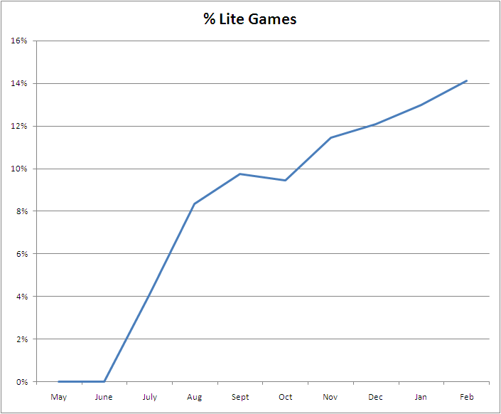
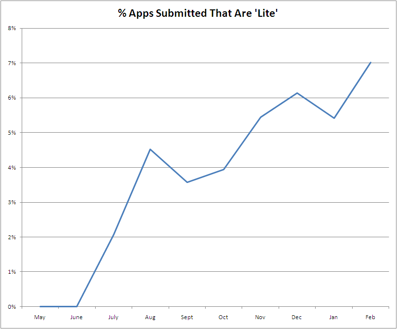
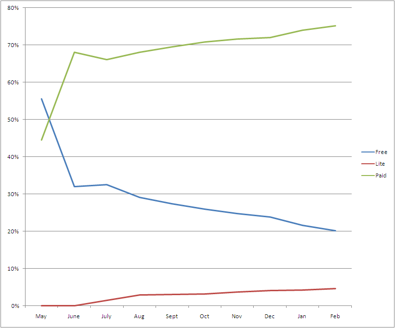

Since the beginning, figuring out the right way to monetize applications in the App Store has been confusing. Not only was the marketplace completely new and unlike any other software marketplace, but the App Store still itself was incredibly limiting. In addition, the price for applications trended downward while alternatives like advertising entered the market. The net of it was a lot of experimentation regarding how to make money on applications.
Business Model Emerging
Over the last couple of months, I believe that a business model for paid applications is starting to emerge. Not surprisingly, it looks a lot like the business model that licensed software businesses have been using for a long time (turns out that all those folks had figured something out). That model? Trial versions with paid full versions.
The App Store doesn’t have explicit support for this, unfortunately, but application developers are working around this by introducing ‘Lite’ versions of their applications. Not only are there success stories out there, but the submissions to the store show the increasing popularity of these ‘Lite’ applications. In fact, there are now nearly 1,000 ‘Lite’ applications the App Store, representing about 5% of the total applications.
Looking at the categories, one other very striking thing appears. Application categories that tend to have longer term recurring value (like Games, Business, Finance, Photography, and Productivity) appear to also have the most ‘Lite’ versions.




In some categories, the growth is even more pronounced. For example, in the category of Games, 14% of the applications are ‘Lite’ applications!

But the real evidence of the growing popularity of ‘Lite’ applications (at least among developers submitting applications) is that each month, a growing proportion of the new apps are ‘Lite.’ In February so far, 7% of the new applications are ‘Lite’ applications! And the downward trend of free apps continue as more ‘Lite’ apps hit the store.


The Paid Upgrade Problem
So I have to admit it, as a real fan of the App Store and the iPhone, I’m excited to see a business model developing, especially one that may help improve developer’s ability to collect value for their hard work. And while trial versions are a first step, they are only a first step. For though they let users try a new version before buying, and therefore should allow developers to raise their prices, they still permit developers to collect payment for their work only once.
This is a problem mainly because in traditional licensed software, developers keep working on their application, improving it across a number of different versions. And at the companies that I’ve worked for, the (about) yearly upgrades were a big driver of yearly revenue. Without the upgrade revenue, a rational developer should really wonder whether their time spent improving an existing product will really net more users, or whether they should instead spend their time building a new application that they can monetize.
So while ‘Lite’ should help reward developers who create a deep and rich application experience for their users, I’m not sure it goes far enough. To support ongoing development of these deep applications, Apple needs to do more.
What Should Apple Do?
What should Apple do? I think there are a few things that would go a long ways:
The most obvious thing that Apple should do is provide the concept of trial versions right in the App Store. By providing the infrastructure and user experience around this, they can ‘institutionalize’ the concept of trial software, making it a common and well accepting model. They can also save developers the time of having to create and maintain two applications in the store.
But Apple also needs to address the upgrade problem. Apple could allow paid upgrades, but this actually ends up being a real mess since it creates a complicated set of versioning issues (for example, once a paid upgrade has been created, do bugs still get fixed in the old version?).
Apple could also enable the concept of ‘subscriptions’ to software, enabling developers to charge something like $.99/month, making it possible to collect longer term revenue for highly valuable applications.
It seems clear that enabling trialing natively is a no brainer for the App Store. Will Apple step up? And could they surprise us by doing even more? We’ll have to wait and see, the App Store remains a young marketplace and each month we all learn something new.